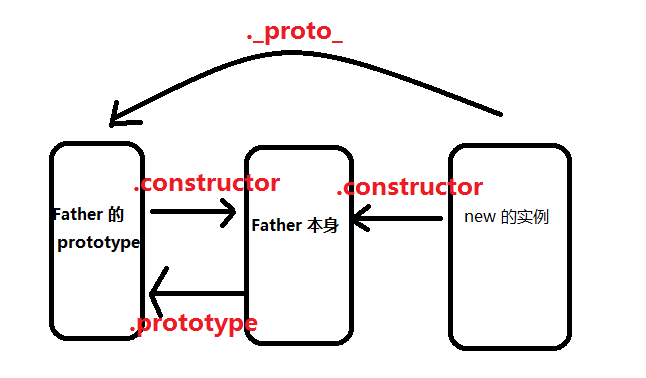

proto和prototype
prototype是函数的一个属性，在定义构造函数的时候自动创建，它指向函数的原型，被 __proto__指向。
__proto__是对象的内部属性，它指向构造器的prototype，对象依赖它来进行原型链的查询，instanceof方法也是依赖它来判断是否存在继承关系。
prototype只能作为构造函数的属性，而__proto__可以作为任意对象的属性。
实例都有一个 constructor （构造函数）属性指向构造函数,叫 构造属性。
原型对象（A.prototype）是 构造函数（A）的一个实例。
参考地址:https://blog.csdn.net/spicyboiledfish/article/details/71123162
